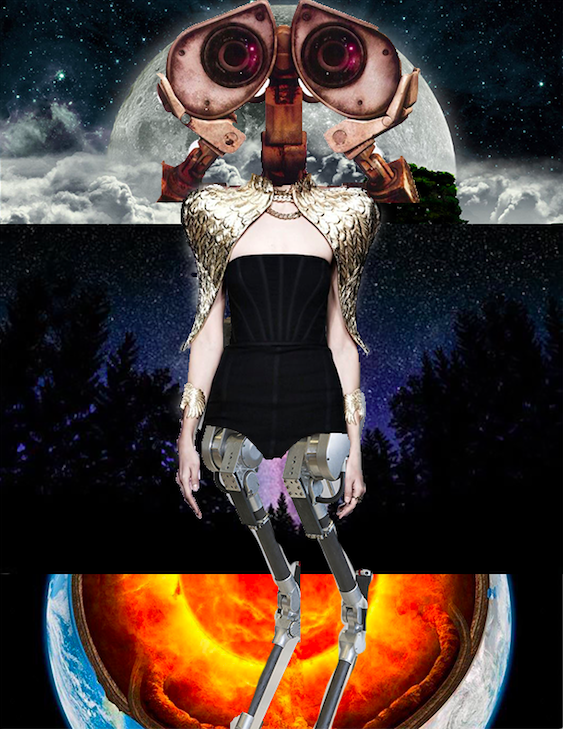
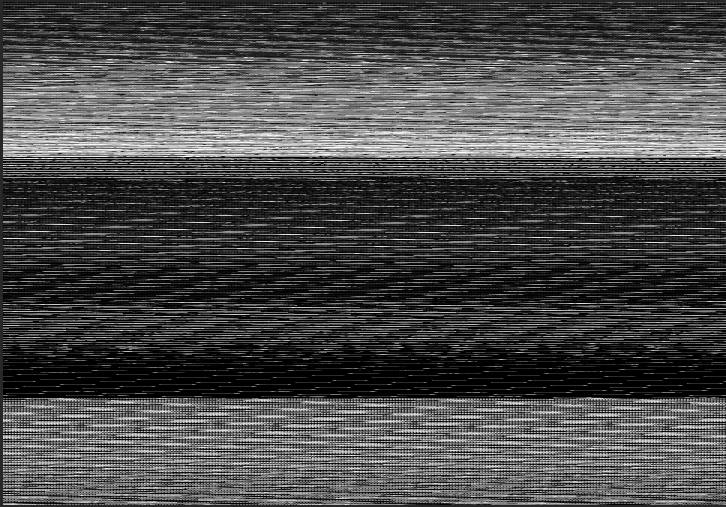
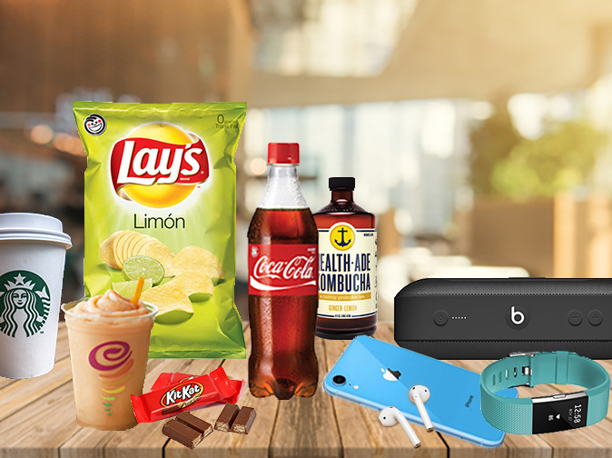

Patty Silva
Portfolio
Artist's Statement
Video Art, Audio/Video, 2019
For this project I wanted to capture my experience of going to an art event. The audio I included and the choppy, kind of shaky clips are intended to make it seem more realistic and somewhat like replaying a memory in your head.
DrainWaterBook, Audio, 2019
A combination of sounds that are representative of textures, space, and signals.


WallE Glitch , Composite/Glitch art, 2019
The left image is a composite image create by myself and two other group members in our ART74 class. The right side image is the glitched version of the left image.The process I took for glitching this image involved a lot of trial and error to obtain actual results AND a file that was not corrupted. I finally ended up taking the original psd file "Group Collab Final", saving it in photoshop as a photoshop RAW file, then converting the raw file to txt, editing the txt file, then converting back to raw.

Look @ My Stuff
Beauty Guru Promo Code
SALESALESALE
Composite Art, 2019
The names of my composite images are: Top- Look @ My Stuff. Middle- Beauty Guru Promo Code. Bottom- SALESALESALE. I chose to do a still life series and make images that show our relationship to buying things/the things we buy through consumerism and advertisements. I got this idea by scrolling through emails and noticing how many of them were geared towards getting me to buy something, which is mainly what inspired the third piece, which is basically a collage of screenshots of a few of my emails that are ads to convince me to buy products through sales, free shipping, etc. The first two images are my take on a traditional style of still lifes in which theres pretty much just objects sitting on a table with a simple background. I used the quick select tool and the crop tool to select the objects and then pasted them onto the backgrounds.